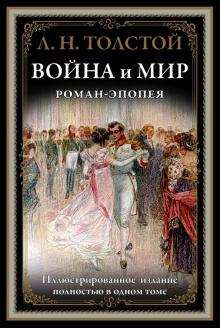

Описание
"Война и мир" — роман-эпопея Льва Толстого, одно из крупнейших произведений мировой литературы, описывающее жизнь русского общества в эпоху Наполеоновских войн. "Война и мир" — это масштабная картина жизни России, взятая во всех ее социальных слоях (от крестьян до императора Александра I), и детальное описание хода военных действий, и осмысление поведения человека на войне, но главное — это глубокое философское осмысление и исследование жизни как таковой — в быту, в семье, в мирное время, на войне. Именно поэтому "Войну и мир" можно читать и перечитывать всю жизнь — этот роман никогда не потеряет своей актуальности.